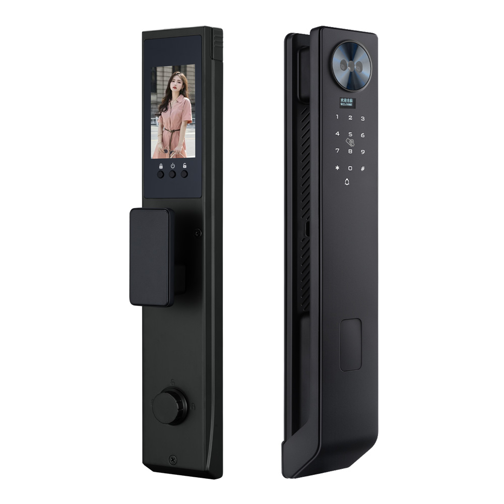
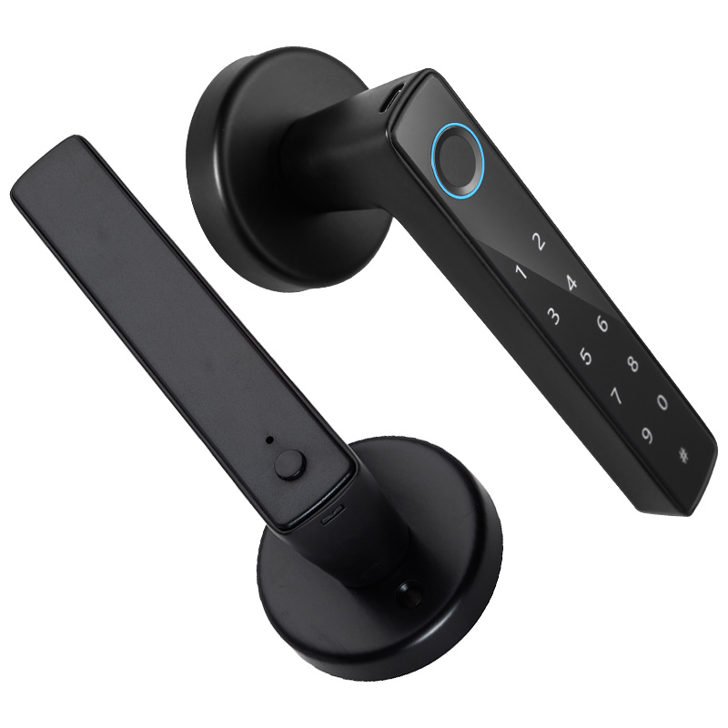
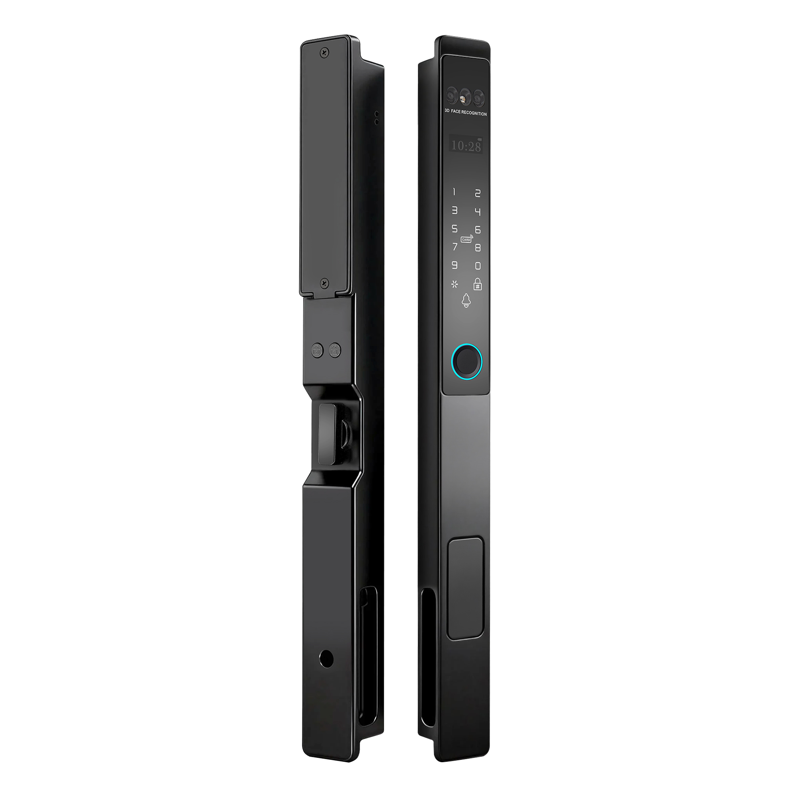
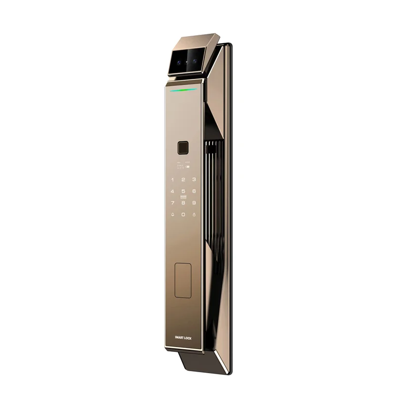
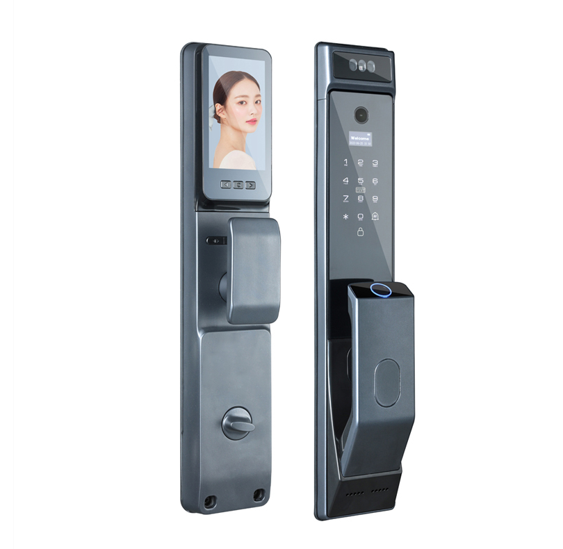
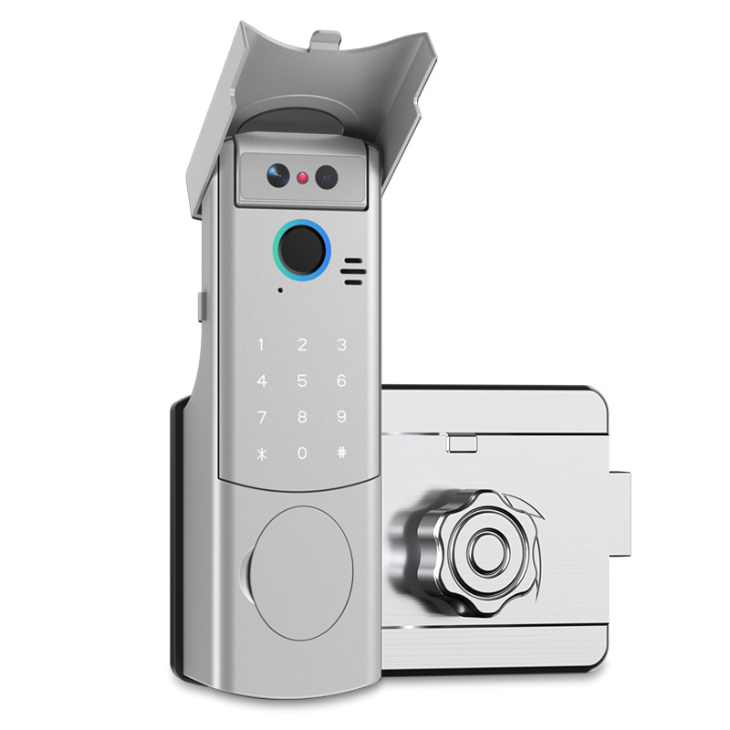
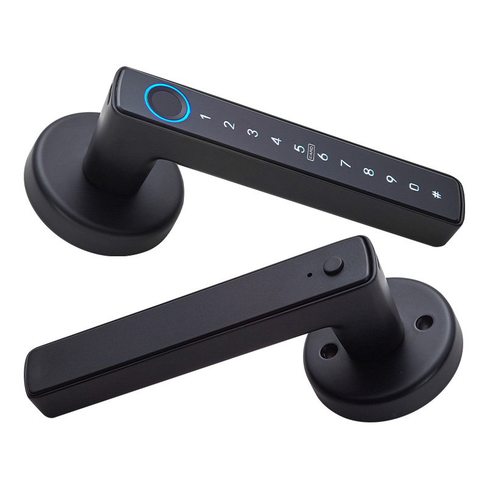
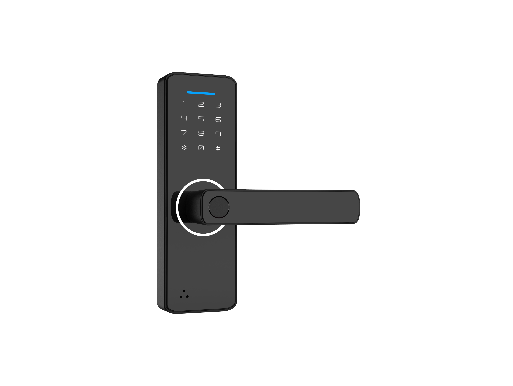

Produtos Residenciais

WF-019 Fechadura Remota Invisível
- Corpo monobloco em liga de zinco com estilo minimalista moderno, integrando-se em qualquer decoração e valorizando o ambiente doméstico.
- Design invisível que se integra perfeitamente na porta sem afetar a estética, mantendo a entrada limpa e elegante.
- Múltiplos métodos de desbloqueio ›impressão digital, palavra-passe, controlo remoto Wi-Fi/Bluetooth ›para satisfazer todos os membros da família.
- Encriptação avançada que oferece elevada segurança, prevenindo intrusões e garantindo proteção total do lar.
- Ideal para casas, apartamentos e outros cenários residenciais, oferecendo uma solução de segurança elegante e prática.

WF-X8 Fechadura Inteligente com Olho Mágico
- Estilo minimalista moderno com suporte para 10 idiomas ›ideal para casas, apartamentos, escritórios, hotéis e dormitórios em todo o mundo.
- Impressão digital + palavra-passe + cartão + chave + App remoto ›cinco modos de desbloqueio à escolha.
- Impressão digital semicondutora: leitura <0,5 s, FAR <0,1 %, FRR <0,01 %, rápida e segura.
- Capacidade para 100 impressões digitais, >1 milhão de ciclos, funcionamento estável de ≤0 a 60 °C.
- Alimentação DC, personalizável para exportação; marca WAFU autorizada, popular na Europa, América, Sudeste Asiático e Médio Oriente.

WF-026 Fechadura Oculta Antirroubo
- Corpo monobloco em liga de zinco nas cores preto/prata minimalistas; instalação invisível compatível com portas de casas, apartamentos, escritórios e hotéis.
- Kits flexíveis: 2 ou 4 comandos, App opcional, Bluetooth, expansão com teclado biométrico para diferentes necessidades.
- Sistema duplo com dois motores: o motor de reserva ativa-se em caso de falha, garantindo funcionamento contínuo.
- Comando remoto encriptado, anti-cópia; teclado adicional para reconhecimento de segundo nível em segundos.
- Top seller na Europa, fornecimento cross-border, marca WAFU autorizada, disponível em AliExpress, Amazon, eBay, Lazada, etc.

WF-MY6 Fechadura 3D com Olho Mágico
- Reconhecimento facial 3D com luz estruturada permite que crianças abram a porta facilmente; ecrã interior grande identifica visitantes sem esforço.
- Ângulo ultra-amplo de 120° + visão noturna com alertas em tempo real para o telemóvel, garantindo segurança dentro e fora de casa.
- Rosto 3D + impressão digital + palavra-passe + cartão IC/ID + NFC + chave mecânica + App ›cobre todos os hábitos familiares.
- Bateria de lítio recarregável de longa duração; funcionamento estável de ≤0 a 60 °C, compatível com vários tipos de portas.

WF-F8 Fechadura com Impressão Digital & Palavra-passe
- Capacidade para 50 impressões digitais + 100 palavras-passe ›suficiente para três gerações e visitas.
- Geração de palavra-passe dinâmica/temporária com um toque para limpeza, entregas e serviços; expira automaticamente após uso.
- Desbloqueio por impressão digital semicondutora ≤0,5 s, FRR <0,01 %; palavra-passe fantasma evita espionagem e protege a privacidade.
- Instalação sem perfuração para portas de 35–55 mm, substitui fechadura antiga em 3 minutos, portátil para mudanças de casa.
- 4 pilhas AAA com autonomia de ~200 dias, porta Type-C de emergência.

WF-016 Fechadura com Maçaneta
- Corpo monobloco em liga de zinco, design sem fios, substituição direta de fechaduras cilíndricas/mortise antigas, sem perfuração ou cablagem, atualização em 3 minutos.
- Impressão digital semicondutora + palavra-passe de 6–10 dígitos + Bluetooth Tuya ›três métodos de desbloqueio; abertura com um clique ≤0,5 s, ideal para idosos e crianças.
- Abertura esquerda/direita ajustável, compatível com portas de 35–55 mm.
- Design minimalista moderno combina com portas de madeira, aço e portas de segurança.

WF-010 Fechadura Oculta Antifurto
- Corpo monobloco em liga de zinco com acabamento minimalista; design oculto sem canhão exterior preserva a estética da porta de entrada.
- Desbloqueio por controlo remoto, impressão digital, palavra-passe ou App ›adequado para toda a família.
- Várias cores disponíveis; instalação sem perfuração para portas de 35–55 mm, ideal para reformas residenciais.
- Opções OEM/ODM; popular em casas unifamiliares na Europa, América e Médio Oriente.

WAFU H2 Fechadura Inteligente 7-em-1
- Biometria premium: reconhecimento facial 3D e veias palmares com IA, além de impressão digital, palavra-passe, cartão, chave e App.
- Concebida para portas de caixilho estreito; corpo em alumínio de alta resistência com longa autonomia e USB-C de emergência.
- Ideal para moradias de gama alta que exigem máxima segurança sem comprometer o design da porta.
- Gestão remota Tuya: palavras-passe temporárias para visitas, entregas e prestadores de serviços.

WF-MY5 Fechadura com Olho Mágico 3D
- Câmara dual-lens ultra-grandangular 175° com ecrã HD interior; identifica visitantes sem abrir a porta.
- Reconhecimento facial 3D anti-spoof (óculos/chapéu OK, bloqueia fotos); 50 perfis faciais para toda a família.
- Desbloqueio 7-em-1: rosto, impressão digital, palavra-passe, cartão IC, chave, App e intercomunicador da campainha.
- Bateria recarregável 4200 mAh com USB de emergência; disponível em preto, prata e dourado.

WF-MY4 Fechadura 3D com Olho Mágico
- Reconhecimento facial 3D com ecrã interior de 4,3''; crianças e idosos identificam visitantes sem telemóvel.
- Campainha com captura automática de foto/vídeo e alertas em tempo real para o telemóvel.
- Seis métodos de desbloqueio: rosto, impressão digital, palavra-passe, cartão IC, App ou chave.
- Bateria recarregável de longa duração; alarme anti-violação e palavra-passe fantasma.

WF-014 Fechadura Olho Mágico 3D com Reconhecimento Facial
- Olho mágico de câmara dupla HD com reconhecimento facial 3D rápido e intercomunicador de vídeo via App Tuya.
- Veja e verifique visitantes remotamente antes de conceder acesso ›segurança reforçada para a entrada da casa.
- Fecho automático totalmente automático; alimentação de emergência Type-C e visão noturna infravermelha 24/7.
- Excelente escolha para residências premium e portas de segurança.

WF-F6 Fechadura com Impressão Digital
- Cinco métodos num só: App, impressão digital semicondutora, palavra-passe, chave ou cartão IC.
- 4 pilhas AAA com autonomia de cerca de 240 dias; porta Type-C de emergência e aviso de bateria fraca.
- Instalação sem perfuração para portas de 35–55 mm; design moderno adequado a portas de madeira e aço.
- Solução económica e fiável para famílias que procuram a primeira fechadura inteligente.

WF-F1 Fechadura de Puxador Inteligente 5-em-1
- Desbloqueio por impressão digital, palavra-passe, cartão IC, chave mecânica e App remota com grande capacidade de utilizadores.
- Circuito de baixo consumo e 4 pilhas AA para manutenção mínima em uso doméstico diário.
- Gestão remota Tuya com palavras-passe temporárias para visitas e entregas.
- Várias opções de corpo de fechadura; instalação simples para portas residenciais standard.

WF-F4 Fechadura com Impressão Digital & Palavra-passe
- Design minimalista em liga de alumínio; quatro métodos: impressão digital, palavra-passe, chave ou App.
- Substituição direta de fechaduras antigas em portas de 35–55 mm sem perfuração.
- Palavra-passe dinâmica/temporária para familiares, limpeza e entregas.
- 4 pilhas AAA com porta Type-C de emergência; opção económica para lares com orçamento controlado.

WF-Q7 Fechadura Inteligente de Botão Esférico
- App, impressão digital, palavra-passe, chave e cartão ›ideal para portas interiores, quartos e escritórios em casa.
- Design moderno e compacto de botão esférico; instalação rápida sem cablagem.
- Modo de passagem para manter a porta aberta durante o dia; bloqueio com um clique à noite.
- Solução prática para famílias com crianças ou idosos que preferem maçanetas clássicas.
Fechaduras inteligentes para a residência
Proteja a sua casa com fechaduras ocultas antirroubo, desbloqueio 5-em-1 e longa autonomia da bateria. Instalação em 10 minutos sem modificação da porta — ideal para famílias e moradias unifamiliares.

WhatsApp:
+86 15914193183
Telefone: +86 15914193183
Email: wafutechnology@gmail.com